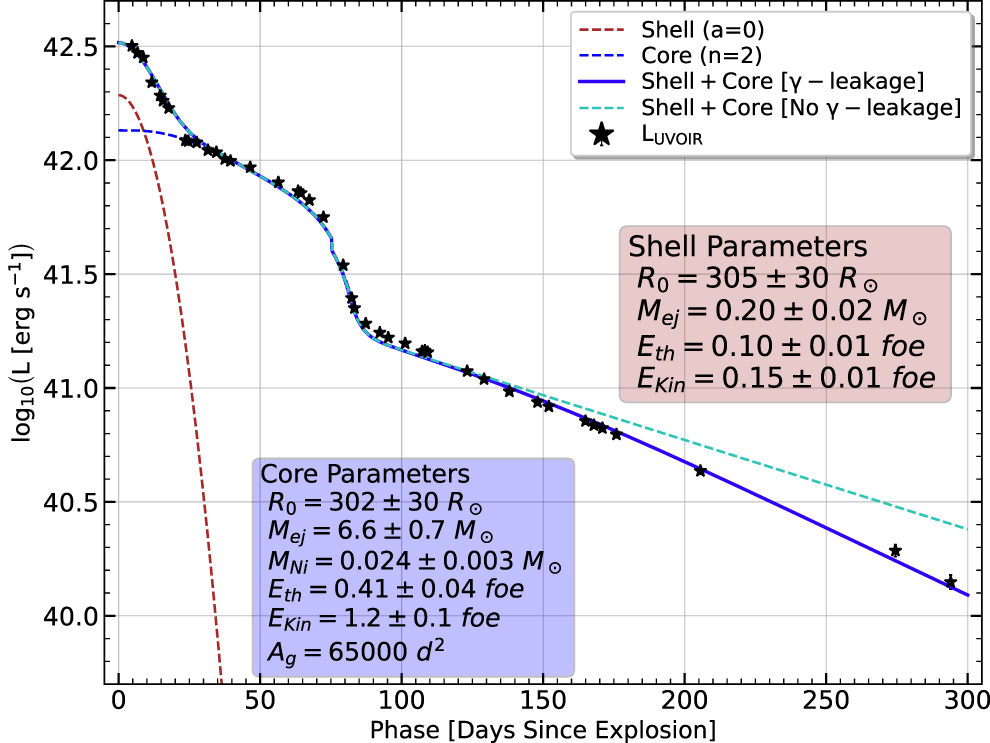

SN 2020jfo: A Short Plateau Type II Supernova from a Low Mass Progenitor
In this work, we have done a detailed photometric and spectroscopic analysis of a Type II SNe that occurred in M61 galaxy. We have also performed detailed semi-analytical and hydrodynamical modelling to ascertain about its progenitor. This work was published in The Astrophysical Journal (ApJ).
Far-ultraviolet to Near-infrared Observations of SN 2023ixf
A High-energy Explosion Engulfed in Complex Circumstellar Material
This letter presents detailed multiband observations utilizing both ground and space based observatories. We covered far-ultraviolet (UV) to near-infrared (NIR) wavelengths, including near-ultraviolet and optical regimes as well, obtaining both photometry and spectroscopy data in detail.
We made use of many world class international facilities extensively to obtain data. We tried to understand the early phase evolution (up to 20 days after 💥) in detail utilizing this rich data set. We estimated various parameters including explosion energy, circumstellar mass and its distribution, and presented a detailed qualitative analysis of UV spectra.
SN 2018gj: A rare SNe type with blueshifted emission peaks throughout
🌄: RGB composite image of SN 2018gj in NGC 6217 host taken from Himalayan Chandra Telescope, IAO, Hanle. It also shows the separation from the host centre (Ref Teja et al 2023 ApJ 954 155 )
🌄:Multiband photometry of SN 2018gj from various telescopes. Spectral epochs are marked in the bottom. (Ref Teja et al 2023 ApJ 954 155 )

🌄:2-componet model fitting results. Parameters are given in the figure itself. (Ref Teja et al 2023 ApJ 954 155 )
(CoralAI Summary): The paper presents a study on the Type IIP supernova SN 2018gj, focusing on its photometric and spectroscopic properties. The supernova exhibited a shorter plateau phase of about 70 days compared to the typical 100-day plateau for Type
IIP SNe. The study includes UV, optical, and near-IR photometric observations and low-resolution optical spectroscopy from the photospheric to the nebular phase. The analysis involves the estimation of various parameters, including
the plateau length, V-band peak absolute magnitude, distance estimation, and the amount of radioactive Nickel (56-Ni) produced in the explosion. It explores the spectral evolution, with a notable observation of persistent blueshift
in emission lines until the late nebular phase, a feature uncommon in Type IIP SNe. The study utilized semianalytical modeling to estimate the ejecta mass, progenitor radius, total energy, and synthesized 56-Ni mass. The study
discusses the implications of consistent blueshifted emission lines and the absence of CSM interaction evidence in the spectra. The lack of dust signatures in the ejecta, along with the possibility of intrinsic high velocity of
the progenitor star, are also considered. Overall, the research provides a detailed investigation of SN 2018gj, offering insights into its unique properties, supernova evolution, and potential progenitor characteristics through
a combination of observational data, modelling, and analysis.
SN 2021wvw: A Core-collapse Supernova at the Subluminous, Slower, and Shorter End of Type IIPs
🌄: RGB color composite finder chart for SN2021wvw utilizing Bessell- BVR filters from HCT. (Ref Teja et al 2024 ApJ 974 44 )
🌄:Light-curve evolution of SN 2021wvw for various filters from GIT and HCT is shown. The light curves also include data from ZTF and ATLAS surveys. The constants added to the individual light curves
are for visual clarity(Ref Teja et al 2024 ApJ 974 44 )
🌄: SYNAPPS model fitting to the observed spectra around the mid- and end-plateau phases. The lower small panels show the model spectra of indi- vidual species when the contribution from rest of the
species is turned off. (Ref Teja et al 2024 ApJ 974 44 )
🌄: Observed and modeled bolometric evolution of SN 2021wvw for 18 solar mass ZAMS models with different sets of parameters. The solid red curve gives the best description of the model. The inset
in the bottom left-hand corner shows the corresponding modeled and observed Fe II 5169 velocities. (Ref Teja et al 2024 ApJ 974 44 )
🌄: MESA+STELLA structures for different cases of 18 Me ZAMS models with different RTI parameters. A few species out of the 22 species network used in the modeling are shown here. Solid lines present
the mass fraction just after we inject the explosion energy. The other two dashed lines show the final ejecta structure before the SB for different ηR,e/ηR values. The final ejecta profiles suffer from
significant fallback during the shock-propaga-tion phase, (Ref Teja et al 2024 ApJ 974 44 )
🌄: Plausible Eexp and Mej ranges plotted from the scaling relations obtained in Goldberg et al. (2019). The scatter points represent the ejecta masses obtained for various models utilized in this
work. The energy values for all the evolved models are between 0.1 and 0.3 foe. The shaded regions include the values obtained considering the errors in the observables. (Ref Teja et al 2024 ApJ 974 44 )
🌄: Midplateau brightness, MV vs. plateau duration (tp) for a large sample including a wide range of Type II SNe obtained from Fang et al. (2024). (Ref Teja et al 2024 ApJ 974 44 )
(CoralAI Summary): The article presents detailed observations and analyses of the core-collapse supernova SN 2021wvw, characterized as a rare short-plateau Type IIP supernova. It reports multiband photometric evolution for up to 250 days and spectroscopic
coverage for 100 days post-explosion. SN 2021wvw exhibits an intermediate luminosity with a notably short plateau phase of approximately 75 days, followed by a sharp transition to the tail phase. The peak absolute magnitude is
noted at -16.1 mag in the r-band, with a nickel mass estimated at 0.020 ± 0.006 M☉. Hydrodynamical modeling suggests a low-metallicity, high-mass red supergiant progenitor. This event highlights the diversity among transitional
supernovae, bridging the gap between typical Type IIP supernovae and stripped-envelope events.